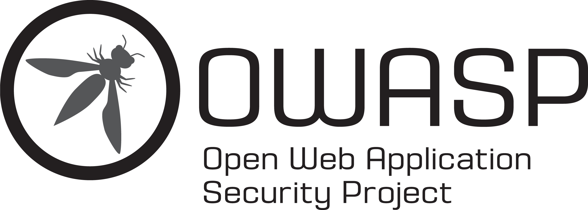

A suspicious login. A compromised account. Conflicting evidence from everyone involved.
This is the one case currently open inside Cryptonic Area Arena. No sample logs, no single flag to guess — you get the full file, and it's on you to work out what actually happened.

An account was accessed by someone who shouldn't have had access to it. The company noticed. The people involved each have their own version of events — and those versions don't fully line up. Your job is to go through everything that was collected, work out what's actually true, and reconstruct the incident the way a real investigator would: from evidence, not assumptions.
Every investigation starts as a scattered timeline. Here's the sequence you'll be piecing back together.
A sign-in from a new device trips an automated alert. On its own, it looks routine.
A password reset goes through that they never requested. Now it's not routine anymore.
The incident is escalated internally. Logs, devices, and communications are pulled for review.
Three people connected to the account give their version of events. They don't all agree.
Every log, message, and statement collected so far — unsorted, unresolved, and waiting for you to work through it.
Not a sample log. A full case file — the way it would actually land on an investigator's desk.
Every login, every failed attempt, every password reset tied to the account — start to finish.
Inbox exports, headers, security alerts sent — and the ones that were quietly deleted.
Where the traffic really came from — connection trails, and the inconsistencies hiding inside them.
Fingerprints of every device that touched this account — the ones you'd expect, and the ones you wouldn't.
Company policy, HR context, and the internal ticket thread — the paperwork that shapes the story.
Every person connected to this incident has given their account. Not all of them agree. Working out why is your job.
You won't get one file to skim and an answer box to fill in. You get the real evidence structure — folders, statements, records — exactly the way a senior investigator would hand a case to someone on their first day. Take whatever time you need. Read everything. Cross-check every claim. Decide for yourself what's signal and what's noise. Then write your own investigation report, in your own words, built on your own reasoning.
There's no mentor walking you through it and no hints along the way. This one is entirely on you — your knowledge, your method, your judgement. That's the part that's actually being tested here.
Once you submit, your report doesn't just get graded — it gets personally read by a senior investigator, an actual industry professional. They'll go through what you looked at, what you missed, and how you reasoned your way to your conclusion, so you walk away knowing exactly where your skills stand — not just whether you got it "right."
Proof you ran a real investigation — built to be shown, not just kept in a folder.
A mark tied specifically to The Last Login — earned only by a working report.
Carries forward as Arena grows — your first step from Rookie Investigator upward.
None of this is a participation reward — only investigators who submit a genuine, working report earn it. That's exactly why it means something when a recruiter or a company sees "Cryptonic Area Arena" on your profile.
Real reactions from students who worked Case CA/0001 end to end.
"I genuinely felt like I was investigating a real breach, not solving a puzzle. The statements didn't match up and I had to figure out who was lying — that part hooked me."
"No hints, no hand-holding — that's what made it worth doing. By the time I wrote my report I actually understood how an incident gets pieced together."
"The device intelligence and network footprint sections made me feel skillful in a way lectures never did. I was cross-referencing evidence like it was my actual job."
"I've done CTFs before, but this was different — there was no flag to submit, just a story to figure out. Writing the final report felt like real investigator work."
"Getting my report read by an actual investigator, not an auto-grader, changed how seriously I took it. The feedback pointed out things I'd genuinely missed."
"Somewhere around the conflicting statements I stopped 'attempting a case' and just became the investigator. That shift is exactly what this is meant to do."
Submit your details and confirm access. Our team gets in touch by email.
The complete evidence package — every folder, every statement.
No timer, no mentor. Take as long as you genuinely need.
Your own findings, your own words, your own reasoning.
A senior investigator reviews your work and your certificate follows.
Investigate the case, submit your evidence and findings, get personally reviewed — and earn a certificate that isn't just a participation token.
Delivered professionally inside your personal investigator review — not an auto-grade.

OWASPOne-time access to this case. No subscriptions.
For a full evidence package, a personal review from a working industry investigator, and a certificate that actually holds up — this is about as low as this kind of access gets. Every program Cryptonic Area runs is built to this same standard, which is exactly why none of them are free.
Certificate · Badge · Investigator Points
Note: this case is built entirely by Cryptonic Area as a realistic simulation. No real person's confidential data is used — but the investigation itself is real.
"Cybersecurity isn't learned by memorizing incidents.
It's learned by learning how to investigate them."
— Karndeep Baror
Everything people usually ask before starting the case.